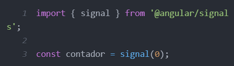
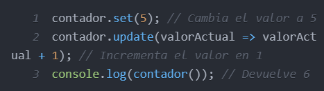
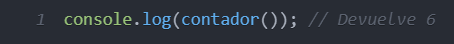

¿Qué es?
Angular es un framework de ingeniería de software de código abierto mantenido por Google,
que sirve para desarrollar aplicaciones web de estilo Single Page Application (SPA) y Progressive Web App
(PWA).
Sirve tanto para versiones móviles como de escritorio.
Características
-
Escalabilidad:
Angular te permite comenzar con proyectos pequeños y luego crecer a medida que tu equipo y
aplicaciones lo requieran.
-
Comunidad activa:
Millones de desarrolladores en todo el mundo utilizan Angular y forman parte de una comunidad
amigable
y próspera.
-
Soporte para todos:
Angular incluye características como hidratación, internacionalización, seguridad y accesibilidad
incorporadas para garantizar que puedas construir aplicaciones que lleguen a todos en todo el mundo.
-
Uso de DOM regular
Angular hace uso de DOM regular, lo que permite una mejor organización conforme avanza el
desarrollo
web.
-
Compatibilidad móvil y de escritorio
Angular funciona tanto para desarrollar app moviles como de escritorio, por lo cual tambien es
compatible con muchos navegadores web
-
Velocidad y rendimiento
Angular genera código altamente optimizado a partir de plantillas, lo que ofrece los beneficios del
código escrito a mano con la productividad de un marco. Además, las aplicaciones angulares se cargan
rápidamente.
Configuración
Para empezar a usar Angular debemos hacer lo siguiente
-
Instalación de Node.js y npm
Angular requiere Node.js y npm (Node Package Manager). Si no los tienes instalados, sigue estos pasos:
Descarga e instala Node.js desde su sitio oficial. Al instalar Node.js, también se instalará npm
automáticamente.
Verifica que la instalación sea correcta ejecutando en el mismo orden los siguientes comandos en tu
terminal:
bash
node -v
npm -v
Debería mostrarse la versión de Node.js y npm respectivamente.
-
Instalar Angular CLI
Angular CLI (Command Line Interface) es una herramienta que te ayuda a crear y manejar proyectos Angular.
Para instalarla, ejecuta:
bash
npm install -g @angular/cli
Esto instalará Angular CLI globalmente en tu sistema.
-
Crear un nuevo proyecto Angular
Con Angular CLI previamente instalada, puedes crear un nuevo proyecto Angular ejecutando el siguiente
comando:
bash
ng new nombre-del-proyecto
Aquí, nombre-del-proyecto es el nombre que le quieras dar a tu proyecto.
El CLI te hará algunas preguntas sobre la configuración inicial (como si deseas agregar Angular Routing y
qué estilo de hojas prefieres). Responde según tus preferencias.
-
Navegar al directorio del proyecto
Después de crear el proyecto, navega hasta el directorio del proyecto:
bash
cd nombre-del-proyecto
-
Iniciar el servidor de desarrollo
Para ejecutar el proyecto Angular en tu servidor de desarrollo, usa el siguiente comando:
bash
ng serve
Luego, abre tu navegador web y navega a http://localhost:4200/. Aquí deberías ver la página de bienvenida de
Angular.
-
Configurar el proyecto según tus necesidades
Una vez que tengas tu proyecto funcionando, puedes comenzar a configurarlo según tus necesidades. Aquí hay
algunas cosas que podrías querer hacer:
-
Agregar componentes: Usa ng generate component nombre-del-componente para generar nuevos
componentes.
-
Configurar rutas: Modifica el archivo app-routing.module.ts para agregar nuevas rutas.
-
Instalar dependencias: Usa npm install nombre-paquete para instalar paquetes adicionales necesarios
para tu proyecto.
-
Construir para producción
Cuando estés listo para lanzar tu aplicación, puedes construir el proyecto para producción usando:
bash
ng build --prod
Esto generará una carpeta dist/ con tu aplicación optimizada para ser desplegada en un servidor.
Con estos pasos, tendrás tu proyecto Angular configurado y listo para ser desarrollado.
Signal
Una Angular Signal es una función que gestiona el estado y las dependencias entre diferentes valores en una
aplicación Angular.
Imagina que tienes varios valores que dependen unos de otros; cuando uno de estos valores cambia, las
signals se encargan de actualizar automáticamente los valores dependientes.
Esto se logra mediante relaciones reactivas, proporcionando una actualización fluida y sin complicaciones en
toda la aplicación.
Como crear una Signal
Crear una Angular Signal es un proceso sencillo que se puede realizar con pocas líneas de código. Una signal
se define utilizando la función signal, que toma un valor inicial.

Como modificar una Angular Signal
Para modificar el valor de una señal, Angular proporciona los métodos set y update.
set: Establece un nuevo valor directamente.
update: Permite actualizar el valor actual basado en una función que recibe el valor actual y devuelve el
nuevo valor.

Acceso a los valores de una Signal
Acceder al valor de una señal es simple y directo. Llamar a la señal como si fuera una función nos devuelve
su valor actual.
